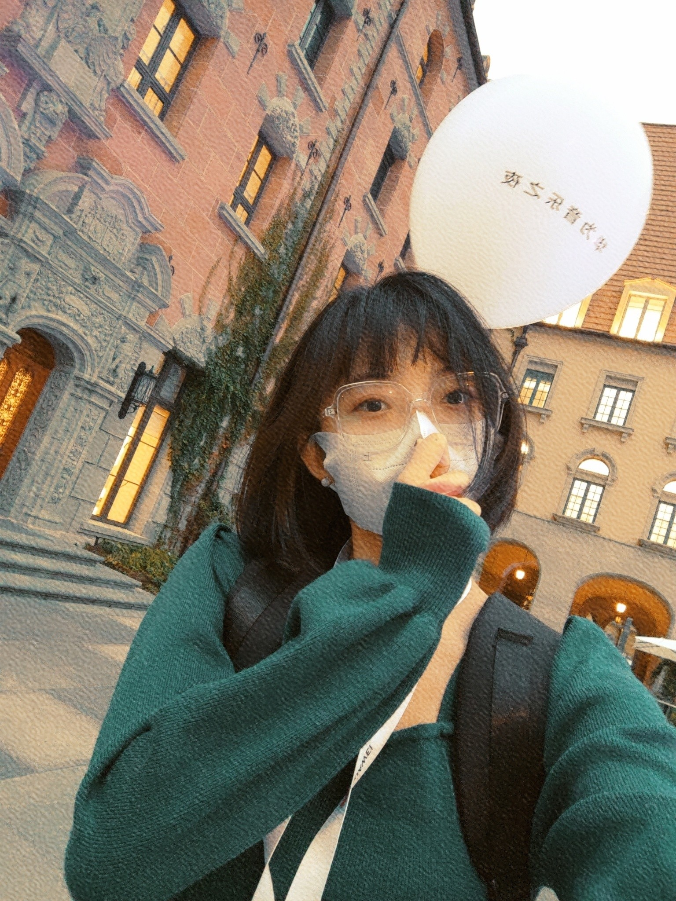

WU MENG (吴萌)
Email: mwube@connect.ust.hk
WU MENG (吴萌)
Email: mwube@connect.ust.hk
🍸 こんにちは
🍻 楽しんでください
Me Me
🐰From Research to Commercialisation🎓 Sensors、Data analysis、Transfer learning
📈KMer、 SAFe、NPDP、 PMP
🎯Fundings、Projects、Exit channels
Academic & Industrial Events
- Wu Meng, WAIC 2021 (Shanghai,China) (Conference service)
- Wu Meng, ICOCN 2018 (Zhuhai,China) (Poster)
- Wu Meng, ICDT 2018 (Guangzhou,China) (Technical support)
- Wu Meng, Asia Communications and Photonics Conference 2017 (Guangzhou,Chian) (Student Representative)
Academic Organization
OSA（Student Member）
- Society for Artificial Intelligence (China)